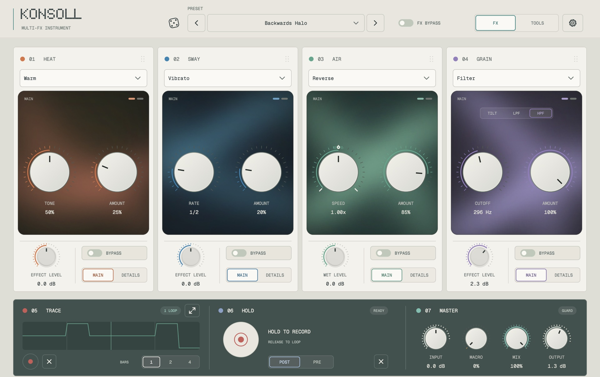
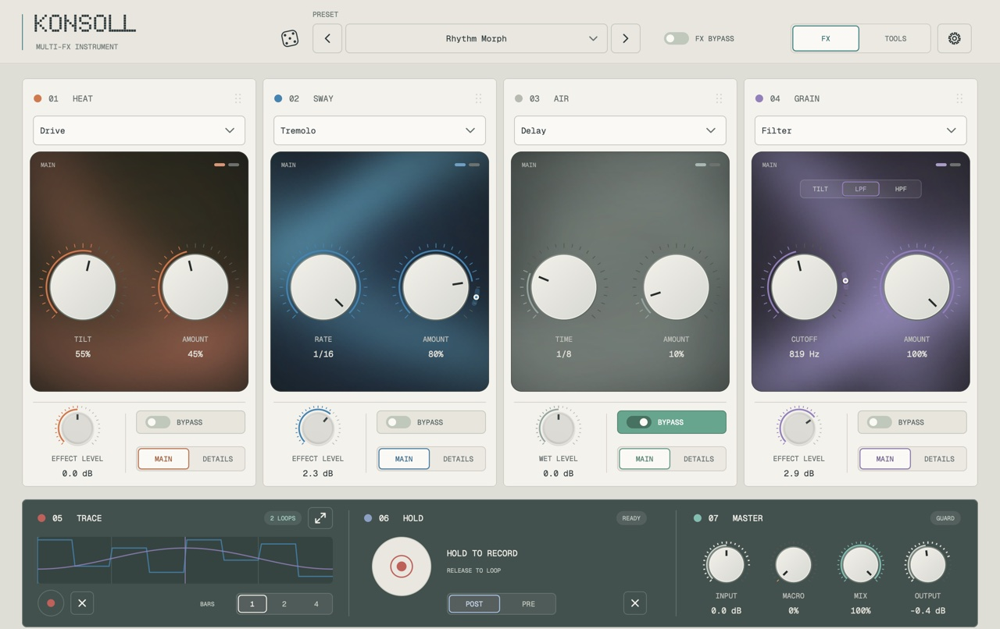

One card, one effect at a time
Each module has a main control, AMOUNT for how much you hear, and a second page for the finer controls. Put the cards in any order by dragging them, or wire them as two paths, centre and sides, or a feedback loop.
Multi-FX instrument · by Fløa
Drive, movement, space and texture in one plug-in. Each module plays one of five effects; Trace, Hold and Scenes keep them moving while you play.

01Modules
Each module has a main control, AMOUNT for how much you hear, and a second page for the finer controls. Put the cards in any order by dragging them, or wire them as two paths, centre and sides, or a feedback loop.
Drive and colour.
Drive · Fuzz · Warm · Wail · Bloom
Movement and pitch.
Twin · Vibrato · Tremolo · Phaser · Shift
Echoes and space.
Delay · Reverb · Reverse · Spool · Splice
Filter, tape and texture.
Filter · Tape · Warp · Press · Static
02Moves with the track
Trace records the knobs you turn and loops them in time with the host. Hold records a moment of audio and loops it. Scenes store whole sounds and morph between them, by hand or over bars of the song. A sidechain from another track can move any control.
A bypassed module mists over rather than going dark, so you can see at a glance what is playing.

03Get the beta
Free, no account, no key. The installer and the plug-in will be unsigned, so your Mac will ask once whether you meant to open them; the install guide walks through exactly that.
macOS
Installer package · Audio Unit + VST3
.pkg · Apple Silicon (M1 or later) · macOS 11+
Download Soon Install guide SoonWindows
VST3
Windows x64
Download LaterThis will be a beta: tested by ear and by machine, but not finished. Intel Macs are not supported. If something feels off or confusing, I want to hear about it.
04Support and contact
KONSOLL is made by one person. Bug reports, confusion and “this should work differently” are equally welcome; support goes straight into the time this takes.